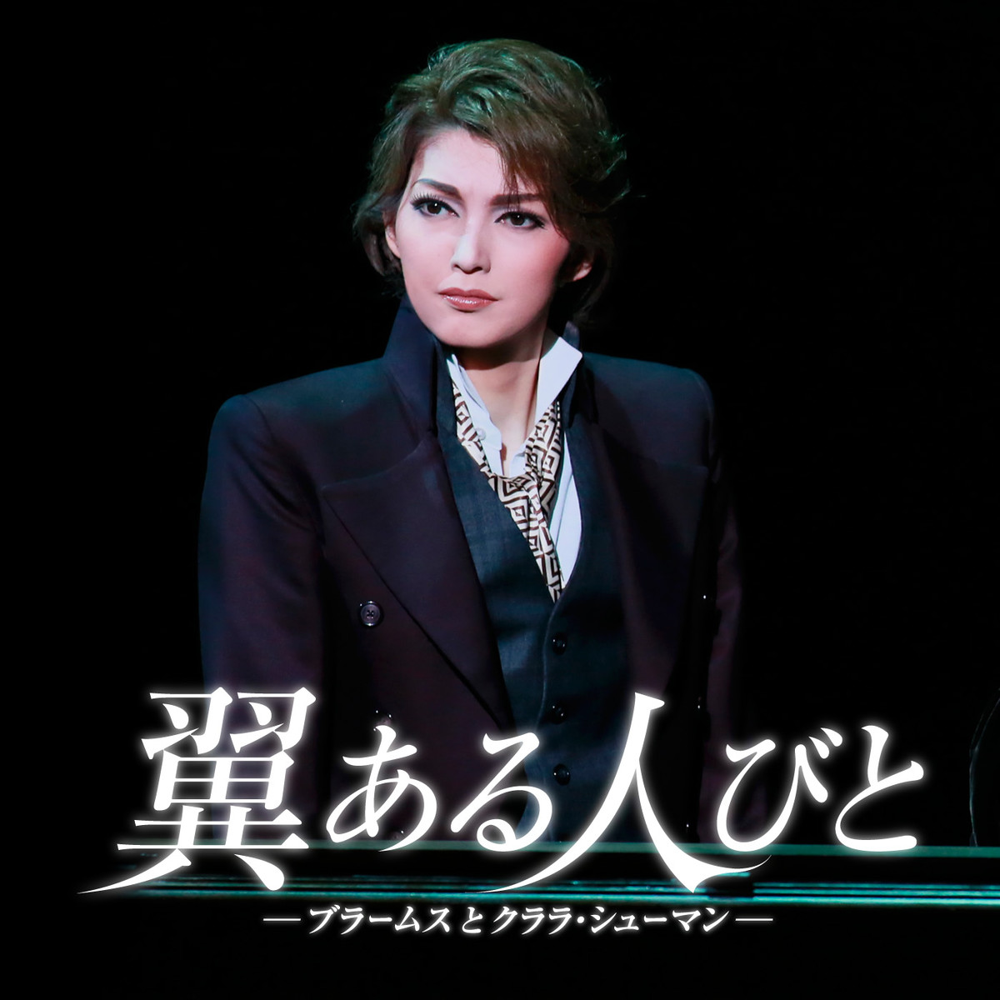

宝塚まとめ
朝夏まなと
宙組トップスター
愛称：まぁさま、まぁくん

その細い体躯、小動物を思わせるような大きな瞳からはどちらかというと女性的な印象を受けるが、圧倒的な演技力、しなやかなダンスを目にすれば、 彼女がトップスターになったわけは明白になるだろう。ダンスにおいては、特に足首の扱い方は現役トップの中では一番だと個人的には思っている。 演技力についてはこの「翼ある人びと」を見ればわかることだが、序盤で受ける弱々しい印象からは想像もつかないようなラストシーンの彼女の眼差しに 是非注目していただきたい。歌に関しては、声に癖があることから賛否両論あるが、伸びやかなビブラートや掠れのない低音からして技術は確かだ。
因みに何度か娘役を務めたこともあるが、それがまた最高にキュートで、恐らく娘役で入団していても成功していたことだろう。
また、愛らしい見た目に反して周囲からは"チャラい"と言われるほどのタラシ(褒め言葉)である。キザったらしい台詞を日常的に口にし、 稽古場では娘役を褒めちぎり、相手役の実咲凜音(みりおん)には一粒ダイヤのネックレスをプレゼントしてさりげなく独占しちゃうまぁさま。 ファンにはバチバチウィンク飛ばすし、客席降りは全席回るし、そりゃあ私たちだって落ちるわ。